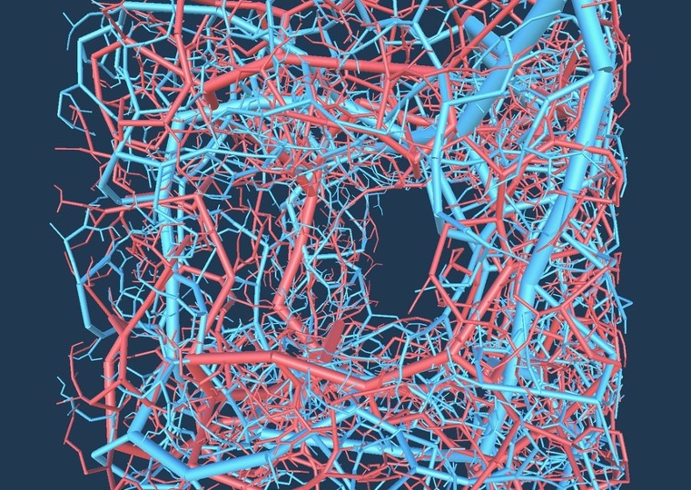
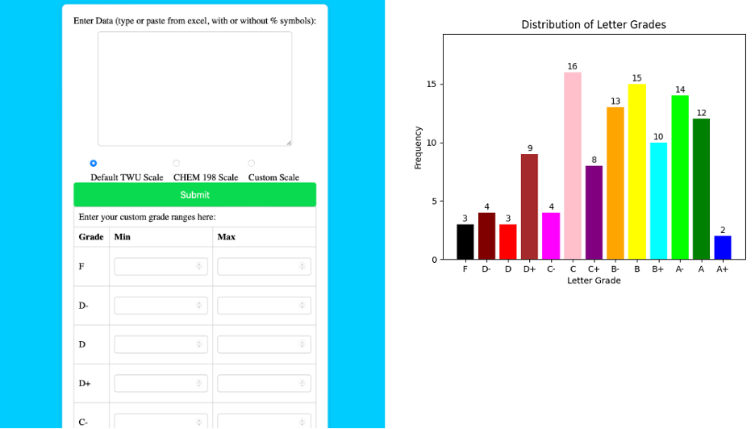
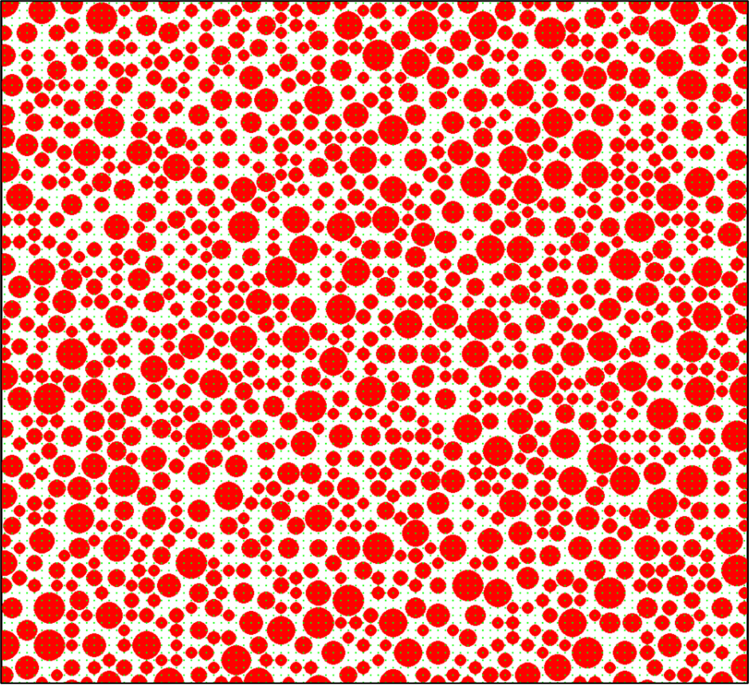
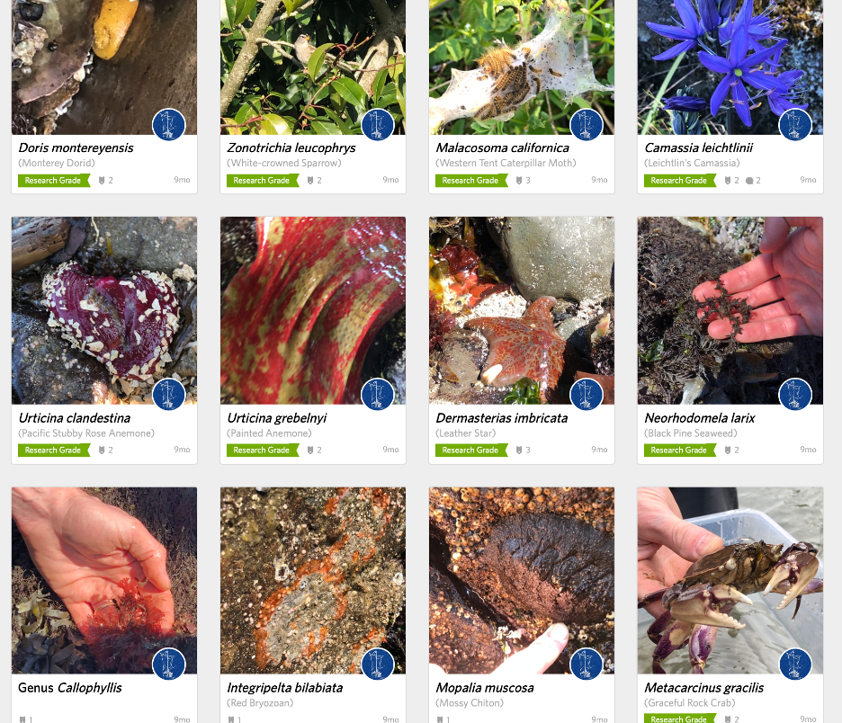
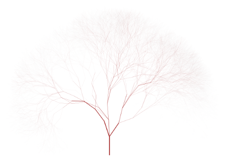

Hi! I'm a BCS (Bachelor of Computer Science) student at the University of British Columbia with a background in biology. I bring extensive lab and industry experience, where I've honed skills in problem-solving and data analysis. I have a proven ability to integrate scientific knowledge with programming to create efficient software solutions. My hands-on experience working with engineers in R&D, as well as my expertise in simulations and prototyping, make me an ideal candidate for software development roles, particularly in technical or scientific domains.
About Me
Education

Bachelor of Computer Science
University of British Columbia | 2026 Graduation
Bachelor of Science: Biology
Trinity Western University | 2024 Graduation
Employment
Developer & Research Assistant
Vitacore Industries Inc. | Summer 2024 Internship
- Developed and optimized state-of-the-art software using C# (Unity) and Python.
- Created mesh-based and node-based models of vasculature and designed a 3D scaffold with multiple arterial networks, leveraging computational techniques to improve performance for biomedical applications.
- Coded custom electronic systems, integrating hardware with programmatic control and interfaces.
Chemistry Lab Instructor
Trinity Western University | Fall 2022 – Present
- Sessional lab instructor, instructing 1 lab section each semester.
- Taught important chemistry laboratory techniques in qualitative and quantitative analysis including titrations, gravimetric methods, and several types of instrumentation.
- Evaluated reports and student technique for labs and received excellent evaluations.
- Designed data visualizations utilizing Matplotlib, constructing a website for other instructors to easily create visualization. Python; Flask; CSS; HTML.
Lab Assistant
Trinity Western University | Fall 2021 – Present
- Responsible for preparation of chemicals and equipment for upper-level and freshman chemistry labs.
- Coordinating with instructors and students to support educational objectives.
- Diligent adherence to safety protocols and meticulous documentation of procedures.
- Manages waste disposal in compliance with environmental regulations.
Truck Driver, Labourer
ADR Environmental | Summer 2021 – 2023
- Proficient operating and driving various-sized trucks for a local junk-removal company.
- Responsible for loading and unloading items as required, ensuring efficient and safe handling.
- Regularly interacted with customers, demonstrating excellent customer service and addressing inquiries.
- Tasked with supervision of new employees.
Groundskeeper
Self-Employed | Summer 2019 – 2023
- Managed general landscaping and maintenance tasks of multiple properties.
- Maintained a detail-oriented approach, ensuring meticulous care in all landscaping and maintenance activities.
- Conducted routine lawn care, seasonal clean-ups, and various landscaping projects.
- Demonstrated expertise in operating and maintaining equipment for optimal performance.
Projects
Generating Three-Dimensional Vasculature
C# (Unity); Python
State of the art software for generating realistic 3D vasculature, consisting of analgorithm utilizing a clustering-based method. Initial nodes are established, and a volumetric space is populated with associators. Each associator performs proximity-based clustering to identify the nearest node, with the average direction of associated nodes guiding the extension of the network by generating new nodes in calculated directions. The algorithm incorporates dynamic management of associators, eliminating those within a defined 'kill distance' from the network. The process iterates, optimizing network density and realism, demonstrating advanced capabilities in algorithmic design, spatial analysis, and real-time network modeling, relevant for both high-performance computing and game development applications. This program allows for increased performance of specific biomedical applications. See more!


Matplotlib Grade Distribution
Python (Flask); HTML; CSS; JavaScript
An interactive tool for creating bar graphs to visualize the distribution of students' grades. Users can select from preset grade ranges, or customize their own. To ensure ease of use, inputs are stripped of unnecessary characters (anything that isn't part of a number), allowing users to paste from a CSV or Excel file. Try it!
Barnacle Distribution Simulator
Python; Pygame
A generative algorithm to model the influence of barnacle basal width on population density, with no other factors considered. To model the distribution of barnacles, a 10cm x 10cm square was simulated and partitioned into 0.1cm x 0.1cm squares, with circles of specified diameter range being placed on each grid vertex in a random order. Collision detection was used to avoid overlap of circles, and 16 iterations were undertaken to maximize space filling. Size and placement data was exported as a CSV file and analyzed to provide density and average diameter information. Recently, I have been working to model similar growth in 3 dimensions. Try it!


iNaturalist
I've spent several years documenting biodiversity throughout Canada. Over time, I have built up a sizeable photographic collection of unique species and helped to identify the contibutions of others. This has been an excellent way to continually learn about the vast biodiversity in the places I live. Try it!
Other Stuff
Check out my github for other fun projects I've tinkered with!

Service
- Science in the Valley (2022-2023). Facilitating university chemistry labs for visiting high school classes.
- Discipleship-Group Leader (2022 – 2023). Leading weekly men’s Bible study and engaging in fellowship with other student leaders, including training and weekly meetings with mentors.
- Small Group Leader (2015-2020). Leading children’s ministry at my local church on a weekly basis.